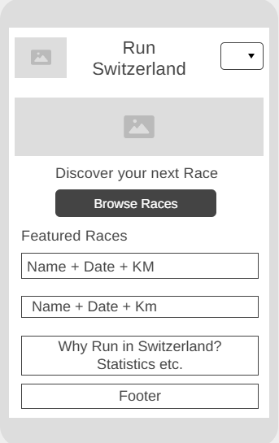
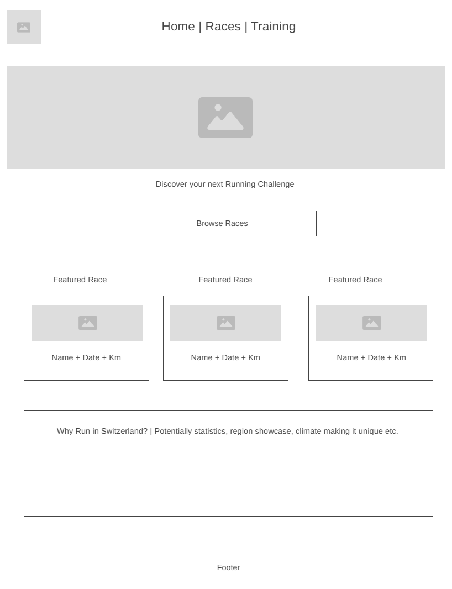

Site Name
Run Switzerland
For the name Run Switzerland I was thinking of an inspiring, yet short and memorable name that talks to its target audience whilst describing its purpose. The website focuses on helping runners discover races throughout Switzerland, regardless of discipline or experience level.
Possible domain: runswitzerland.ch
Site Purpose
Run Switzerland provides a central hub where runners can discover upcoming running events throughout Switzerland. Visitors will be able to browse races, filter events according to their preferences, learn about different race disciplines, and receive guidance on selecting a suitable race based on their current experience and fitness level.
The website will include information about:
- Upcoming races loaded dynamically from a local JSON file.
- Filtering races by region, distance, race type, elevation and month.
- Detailed race information displayed in modal windows.
- Saving favourite races using Local Storage.
- A running guide with beginner advice and race recommendations.
- A feedback/contact form.
Race Categories
The project will primarily use data from the Swiss Running Guide and include the following race disciplines:
- City Running
- Running
- Trail Running
- Mountain Running
- Obstacle Races
- Relay
- Waffenlauf
- Women's Run
- Family Race
- Kids
Scenarios
- Which trail races are taking place in the Bernese Oberland this summer?
- What race would be suitable for someone preparing for their first half marathon?
- Which obstacle races are available in Switzerland this year?
- What race should I choose based on my current fitness level?
Color Scheme
| Color | Usage |
|---|---|
| Alpine Blue (#12355B) | Header, navigation, footer, headings |
| Swiss Red (#C1121F) | Buttons, links, highlights, accents |
| Snow White (#F8F9FA) | Page background and content sections |
Typography
| Font | Usage |
|---|---|
| Montserrat | Main headings and navigation |
| Open Sans | Paragraphs, lists and general content |
Planned Pages
Home
- Hero image
- Introduction to the website
- Featured upcoming races
- My running story and motivation
- Button to browse races
Race Finder
- Search bar
- Filter by distance
- Filter by race discipline
- Filter by region
- Filter by elevation gain
- Filter by month
- Race cards generated from JSON
- Modal dialog with additional race information
- Favourite races using Local Storage
Running Guide
- Beginner advice
- Training recommendations
- Choosing the right race
- "Find Your Next Challenge" recommendation tool
- Feedback form
Future JavaScript Features
- Load race information from a local JSON file using the Fetch API.
- Generate race cards dynamically with JavaScript.
- Allow users to filter races by different criteria.
- Display race details inside a modal window.
- Save favourite races using Local Storage.
- Recommend suitable races based on the user's fitness level.
Wireframes
Mobile Wireframe

Desktop Wireframe
